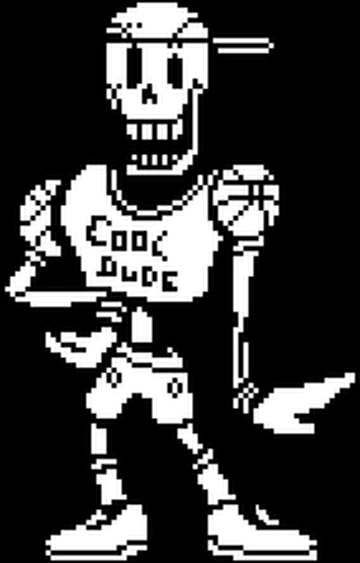

THE GREAT PAPYRUS’S ROYAL GUARD APPLICATION
6th edition
SKILLS
- Expert Chef
- Creator of clever contraptions to capture humans
- The BEST at saying “Nyeh heh heh!”
- No crossword has ever stumped The Great Papyrus!
EXPERIENCE
| Duties | Time |
|---|---|
| Calibrating puzzles | As far back as I can remember! |
| Human capture protocol training | Snuck in since first class (even after they kicked me out! Nyeh heh heh!) |
| Cooking training with Undyne | Time flies when you're having fun. It's been at least twice. |
TRAITS
- Extraordinarily dedicated
- NOT A lazy bones!
- So friendly it cannot be contained!!!! (-2 friends on the Undernet)
- Certified cool dude
- Loved by dogs! But I do wish they would stop stealing my special attacks...
They’re special attacks not special snacks
REFERENCES
- Undyne
- The nice shop lady in Snowdin
- The dogs
- My brother Sans